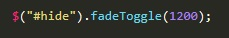

Существует четыре вида функции fade
fadeOut() - эта функция изменяет значение свойства opacity от 1 до 0, т.е. элемент исчезает
fadeIn() - эта функция имеет обратное дествие в сравнении с fadeOut, т.е элемент наоборот появляется
fadeToggle() - если элемент скрыт, он будет отображен, если элемент отображен, он будет скрыт
fadeTo() - изменяет значение opacity до требуемого значения
Сначала указывается скорость изменения, а затем до какого значения opacity нам надо изменить